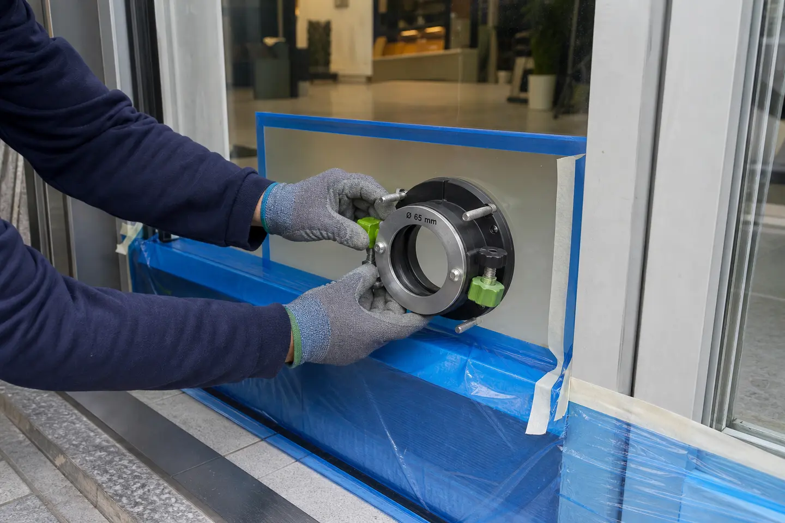

수원 상가 점포 에어컨 배관 이중 유리타공 사무실/가게/점포 시공 현장
이번 작업의 확인 포인트
유리 종류와 프레임 간격, 배관 동선을 먼저 확인하고 주변을 보호한 뒤 타공과 마감 상태를 점검하는 작업입니다.

수원 상가 점포 에어컨 배관 이중 유리타공
사무실/가게/점포 시공 현장

안녕하세요! 수원의 크고 작은 집수리부터
상가 보수까지 책임지는 기찬집수리입니다.
최근 수원 광교나 인계동, 영통 등지의
신축 상가들을 보면 외관이 깔끔한
통유리(커튼월) 방식의 건물이 참 많습니다.
보기에 참 예쁘지만,
입주·입점한 사무실/가게/점포 입장에서는
막상 에어컨을 설치하려고 하면
난감한 상황에 부딪히곤 하죠.
에어컨 배관을 위해 타공 할 벽이
마땅치 않기 때문입니다.
그래서 결국은,
유리 타공이 불가피하게 되는거죠.
.JPG?type=w966)
오늘은 왜 요즘 상가에서 페어유리(이중유리)
타공이 필수인지, 그리고 기찬집수리의
꼼꼼한 시공 과정을 소개해 드리겠습니다.
1. 상가 에어컨 설치 시
유리 타공이 많아지는 이유
.JPG?type=w966)
요즘 상가들은 대부분 두 장의 유리 사이에
공기층을 둔 '페어유리'를 사용합니다.
단열과 방음에는 탁월하지만, 에어컨 배관이
나갈 구멍이 미리 확보되지 않은 경우가 많죠.
뿐만 아니라, 신축 건물이나 통유리 빌딩은
벽면 타공(코어 작업)이 금지된 경우도
적지 않습니다.
그렇다고 창문을 살짝 열어 배관을 빼고
폼으로 막는 방식은 미관상 좋지 않을뿐더러,
여름철 뜨거운 열기가 그대로 유입되어
전기세 폭탄의 원인이 될 수 있습니다!
결국은, 유리에 딱 맞는 사이즈로 구멍을 내어
배관을 연결하면, 외관도 깔끔하고
완벽한 밀폐가 가능합니다 :)
2. 수원 상가 사무실 현장
페어 이중유리 타공 시공기
이번에 다녀온 수원 현장 역시 사무실의
에어컨 설치를 위해 페어유리 타공이
시급한 상황이었습니다.
사진과 함께 작업 과정을 보실까요?

① 철저한 사전 준비와 마킹
유리 작업은 한 번의 실수가 파손으로
이어질 수 있습니다. 타공할 위치를
정확히 확인한 뒤, 작업 중 유리에
스크래치가 나거나 파편이 튀는 것을
방지하기 위해 마스킹 테이프 작업을
꼼꼼히 진행합니다.
② 정밀 타공 작업 (내측 및 외측 각각)
페어유리는 유리가 두 장이기 때문에
안쪽 유리와 바깥쪽 유리를
각각 정밀하게 타공해야 합니다.
.JPG?type=w966)
.JPG?type=w966)
_(1).JPG?type=w966)
_(3).JPG?type=w966)
기찬집수리만의 노하우로
유리 깨짐이나 금 감 없이 깔끔하게
원형 타공을 진행했습니다.
사진을 보시면 잘려 나간 유리 단면이
아주 매끄럽게 떨어진 것을 확인하실 수 있습니다.
③ 깔끔한 주변 정리 및 마무리
타공 후에는 유리 가루나 이물질이 남지 않도록
주변을 깨끗하게 정리합니다.
_(2).JPG?type=w966)

에어컨 배관이 지나갈 자리가 확보된 것을 보니
제 마음까지 시원해지네요. 이제 에어컨 기사님이
오셔서 배관만 연결하면
완벽한 냉방 환경이 조성됩니다.
3. 유리 타공, 왜 '기찬집수리'인가요?
유리는 온도 변화와 압력에 예민한 자재입니다.
특히 수원의 신축 상가들은
고가의 페어유리를 사용하는 경우가 많아
숙련된 기술자에게 맡겨야 안전
합니다.
> 수원 전 지역 출장:
광교, 영통, 팔달, 권선 등
수원의 어떤 상가라도 달려갑니다.
(수원 뿐 아니라 경기, 서울, 인천 전 지역 가능)
> 정교한 기술:
유리 파손 없이 에어컨 배관
규격에 딱 맞는 정밀 타공을 보장합니다.
> 정직한 시공:
불필요한 작업은 권하지 않으며,
현장에 가장 적합한 방법을 제안합니다.
상가 오픈을 앞두고 에어컨 배관 구멍 때문에
고민이신 사장님들, 혹은 인테리어 공정 중
급하게 유리 타공이 필요하신 분들은
언제든 기찬집수리를 찾아주세요.
사장님들의 성공적인 창업/영업과
쾌적한 영업 환경을 위해
정성을 다해 시공하겠습니다! :)
아래 이미지 클릭하시면 기찬집수리로 전화연결 됩니다.